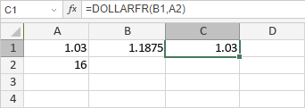

DOLLARFR funkcija
DOLLARFR funkcija je jedna od finansijskih funkcija. Koristi se za konvertovanje cene u dolarima izražene kao decimalni broj u cenu u dolarima izraženu kao razlomak.
Sintaksa
DOLLARFR(decimal_dollar, fraction)
DOLLARFR funkcija ima sledeće argumente:
| Argument | Opis |
|---|---|
| decimal_dollar | Decimalni broj. |
| fraction | Celobrojna vrednost koju želite da koristite kao imenilac za vraćeni razlomak. |
Napomene
Na primer, vraćena vrednost 1.03 tumači se kao 1 + 3/n, gde je n vrednost argumenta fraction.
Kako primeniti DOLLARFR funkciju.
Primeri
Slika ispod prikazuje rezultat koji vraća DOLLARFR funkcija.
